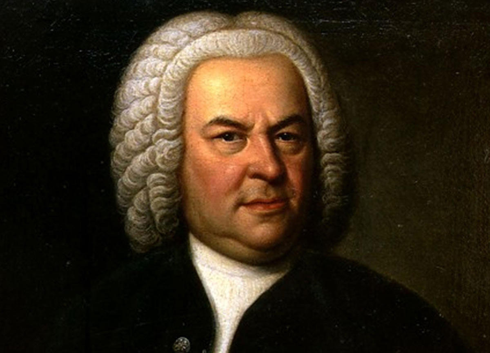

Bach was a German composer and musician of the late Baroque period. He is known for his orchestral music such as the Brandenburg Concertos; instrumental compositions such as the Cello Suites; keyboard works such as the Goldberg Variations and The Well-Tempered Clavier; organ works such as the Schubler Chorales and the Toccata and Fugue in D minor; and vocal music such as the St Matthew Passion and the Mass in B minor. Since the 19th-century Bach Revival, he has been generally regarded as one of the greatest composers in the history of Western music.